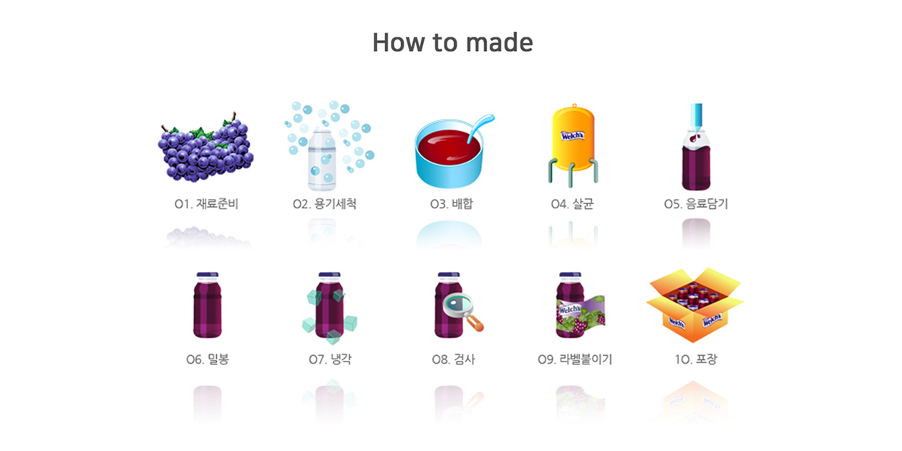

> Our Story > Welch's
1869년 미국 뉴저지에서 Dr.Thomas Bramwell Welch 에 의해 최초의
포도주스가 만들어진 것에서 시작되어, 현재 미시건, 뉴욕, 오하이오,
펜실바니아, 워싱턴, 캐나다 온타리오 지역에서 1,400여명의 멤버에 의해
재배되는 콩코드 포도를 주원료로 만들어지고 있으며, 전세계 30여개
국가에서 판매되고 있습니다
Concord Grape는 다른 미국산 포도 종자들 보다 다양한 지역과 기후
조건에서 재배됩니다. 포도 넝쿨이 무성하고 생산적이며, 뉴욕주에서는
10월 중순까지 무르익게 됩니다. Concord 포도는 다양한 용도에 적합하기
때문에 큰 시장 잠재력을 가지고 있습니다.주스, 젤리, 프리저브 용으로
가장 중요한 종이며, 일부 물량은 와인 제조 및 신선 과일로 사용되기도
합니다.그러나 씨앗의 존재뿐만 아니라 껍질 갈라짐 및 수확 후 가공으로
그 사용이 주스, 젤리 용으로 제한됩니다.
> Our Story > How to made

“The grapes in our juice are proudly grown
by the farmer families who own Welch’s.
It makes a difference you can taste.
Because it’s got to be good enough
for our families to be good enough for yours.”